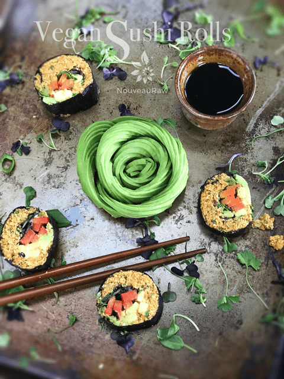

Mock Salmon Pate’ Sushi Rolls

~ raw, vegan, gluten-free, grain-free, nut-free ~
In the past, I have made recipes and shared information on Sacha Inchi seeds. I like to use them every so often to keep a variety of flavor and nutrients happening across the plate. Plus, it’s nice to cut back on the nuts… especially if you eat a lot of them.
Need more protein?
Just in case these seeds are new to you, I thought I would briefly chat about them. For starters, Sacha Inchi seeds are a complete protein, containing all eight essential amino acids.
Protein is a major component of every cell in your body; it acts as the building block of your muscles, bones, cartilage, skin cells, and blood cells. (source) Plus, it plays a role in creating enzymes, hormones, and other biological chemicals. (source)
So, if you are looking to up your protein intake and wish to do it in a plant-based fashion, then Inchi seeds are another wonderful option. You learn more about Inchi seeds (here). I wrote a little posting on them.
Creating sushi rolls is fun and easy. They might not always turn out perfect, but that’s ok, trust me, a wonkily shaped sushi roll will not, I repeat, will not affect its flavor. :) The most important part of creating them is just having fun… plus there’s a lot of eating with your fingers.
Rolling Mat Alternative
Some of you may look right past this recipe because you don’t own a sushi mat. If you threw up the white flag, no need to surrender, I will throw you a lifesaver called the “Towel Method.” A thick towel doubles as a bamboo mat and also wipes up your mess when you’re done. A towel is flexible which allows you to shape and roll the sushi effortlessly into a beautiful roll.
If you do a quick “drive-by” and scroll through the entire posting, you might find the length of the directions intimidating or just too long. You must know me by now… I make sure to share every detail that I can think of to help you create a successful recipe. Once you make this sushi and see how easy it is, you will be able to breeze through it the second, third, twentieth, time around. I hope you enjoy this recipe. Be sure to comment below. Blessings, amie sue
yields 3 packed cups filling
- 1 cup (174 g) Inchi seeds
- 1 3/4 cups (325 g) shredded carrots
- 1/4 cup (50 g) water
- 3 Tbsp (40 g) fresh lemon juice
- 1 Tbsp olive oil
- 1/2 Tbsp (6 g) kelp powder or 1 – 1/2 sheet nori
- 1/4 tsp (2 g) Himalayan pink salt
- 1/4 cup (50 g) celery, minced
- 1/4 cup (40 g) red onion, minced
- 1/4 cup (6 g) fresh parsley, minced
- 1/2 tsp (1 g) dried dill weed, or 1 Tbsp (2 g) fresh dill weed
Preparation:
Creating the filling:
- Shred the carrots first.
- You can do this with the shredder attachment that comes with the food processor or by hand.
- In the food processor, fitted with the “S” blade, combine the Inchi seeds, carrots, water, lemon juice, olive oil, kelp powder, and salt. Process until almost paste-like (think pate’) and put into a bowl.
- You may need to add more water, do so 1 Tbsp at a time, until the pate’ texture is reached.
- If you are going to use the nori sheet, break it up into pieces and then grind to a powder texture. I did this in my Bullet, but it can be done in a spice grinder too.
- Add the celery, onion, parsley, and dill. Mash everything together with a fork, making sure that the spices get evenly distributed.
- By not adding these to the food processor, you leave a little texture to the pate’, you can, however, pulse it into the pate’ if you wish.
Prepare the mat or towel:
- The form of sushi rolling that we will be doing is called maki sushi, which means that the filling remains on the inside of the nori sheet.
- Use the same method whether you are using a mat or a towel.
- Cover the mat or the towel with plastic wrap.
- This will prevent any filling from sticking to the rolling apparatus.
- If using a mat, position the bamboo rolling mat, so the bamboo strips are running horizontally to you.
- If using a towel, position the grain of the fabric so it is running horizontally to you. KIDDING. Sorry, I suppose this isn’t the time to be goofy around, is it? My bad.
Creating the sushi roll:
- Take a moment to feel the nori sheet on both sides. One side is smooth and the other a little rough. The nori should lay on the rolling mat with the rough side facing upwards.
- You can also tell just by looking at most of them. There is a shiny and dull side. The dull side should be facing upwards.
- Start by placing a portion of the filling on the nori wrap, starting about 1/2″ from the edge.
- You can make the sushi rolls as thin or thick as you want, but keep in mind if they get too large, they can be difficult to handle and keep tidy. If you only cover 1/2 the nori sheet, use about 1/2 cup. To cover the whole sheet, use 1 cup of filling.
- I like to use my fingers to spread the batter. The less fussing you have to do while working on the nori sheet the better. Nori starts to soften pretty quickly when moisture comes in contact with it.
- Spread a layer halfway across the nori sheet. Sometimes, I take it all the way over to the other edge.
- Wet your fingers as you spread the filling over the nori sheet.
- Lay any extra fillings on top.
- I recommend creating long thin slices of the veggies that you use. Don’t make them chunky as this will lead to an unappealing appearance and mouth-feel.
- For ideas, you can use carrots, green garden onions, bell peppers, cucumbers, zucchini, avocado, and sprouts. Don’t feel limited, feel creative. :)
Commence the rolling sequence:
- Using the closer edge of the rolling mat, start rolling and tucking the nori sheet tightly… but not too tight that the batter is squishing out the edges.
- Don’t get the towel/matt stuck in all that rolling madness.
- The towel/mat will act as a guide, and you continue rolling from one edge to the other. It may seem like a long haul, but you will make it. ;)
- Be sure to put pressure on the roll from all three sides at all time, especially on stops to allow it to roll tightly.
- Roll until just an inch of nori shows at the other end.
- Wet your finger with water and seal the edge of the nori as you make that final roll to seal the deal.
Slicing the sushi roll:
- Use a wet, sharp knife to cut the roll into little sushi bite-sized pieces.
- You can usually get anywhere from 6-8 pieces per roll.
- I start by cutting the sushi roll in half, then cut each half into thirds… leaving me with six pieces of sushi.
- Most people like to pop one roll into their mouth, rather than taking bites out it. Cleaner and easier to eat.
- Keep the knife wet when in between each cut, so the knife doesn’t “drag” and cause snags in the nori. If you can get away without sawing the knife threw, your slices will be nicely formed and shaped.
- Line the slices of sushi up on a plate(s).
- Enjoy with soy sauce, wasabi paste, and pickled ginger.
© AmieSue.com